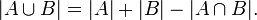
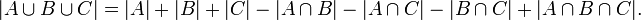

| Prfix Sums | |
| Pedro Ribeiro - DCC/FCUP |
A very useful concept is that of "prefix sums", also known as "cumulative sums".
Imagine for instance an array of integers. The cumulative sums are the total sums up to the respective position. For example:
Position i: 0 1 2 3 4 5 6 7
Array: 3 7 2 4 5 7 6
Cumulaive Sum: 0 3 10 12 16 21 28 34
If we have the cumulative sum stores, which can be linearly calculated - O(N) - finding the sum of a certain interval can be done in constant time - O(1). For example, if cs[] keeps the cumulative sums, the sum between positions a and b is equal to cs[b]-cs[a-1].
This can be done to solve many problems in an efficient way. Here's a simple example:
The idea of cumulative sums to compute sums of intervals uses a principle known as "inclusion-exclusion". In simple terms, this principle tells us how we can relate the sizes of two sets ant their union:

If we had 3 sets:

This principle might be very useful in counting problems, but for know we will apply it to find the sum in two dimensions.
In the same way we define it for 1 dimension, let's define cs[i][j] ash the cumulative sum matrix (the sum of all positions that are less than i,j):
matrix cumulative sums
1 2 3 0 1 2 3
0 0 0 0 0
1 2 3 5 1 0 2 5 10
2 4 6 7 2 0 6 15 27
3 2 7 8 3 0 10 24 44
This can be computd in O(N^2) if N is one largest side of the matrix. Let v[i][j] be the value of the number contained in i,j. Then:
cs[i][j] = v[i][j] + cs[i-1][j] + cs[i][j-1] - cs[i-1][j-1] (using the inclusion-exclusion principle)
With this, from now on, if we want to compute the sum of the rectangle with corners a,b and c,d (with a<c and b<d):
sum(a,b,c,d) = cs[c][d] - cs[a-1][d] - cs[c][b-1] + cs[a-1][b-1] (using the inclusion-exclusion principle)
For example, if we know all the rectangle of a given matriz, we can do it in O(N^4), with N beong the largest side of the matrix. All we need to do is test every possible pair of corners of the rectangle (two cycles for bottom corner, two cycles for top corner) and then we can obtain the sum of that rectangle in constant time using cumulative sums.
Here is an example problem solvable directly with this:
Pedro Ribeiro - CRACS & INESC-TEC, DCC/FCUP